THE ADVENTURES OF PORTE CRAYON AND HIS COUSINS.
CHAPTER III: WEYER'S CAVE
FOLLOWING the valley road, they passed the night at New Market, and dined on the next day at Harrisonburg the county town of Rockingham. One mile south of this place they left the turnpike, and drove twelve or thirteen miles, over a pleasant country road, to Port Republic, a forlorn village on the Shenandoah, whose only claim to notoriety is the fact that it is only three miles from Weyer's Cave. "There, girls!" exclaimed Porte Crayon, pointing to a hill which rose abruptly from the broad meadow lands skirting the river, "there is Cave Hill!" This news caused quite a flutter among the inmates of the carriage, and furnished a subject of animated conversation, until they drove up to a neat-looking country house at the foot of the hill. The prompt landlord met them at the gate with a cheerful welcome, and the interior of Mr. Moler's house proved as agreeable and well-ordered as the outside was neat and attractive. "Will you visit the cave to-night, ladies?" inquired the host. "To-night!" exclaimed Fanny, taken by surprise. "Oh yes," lisped Minnie, "by all means; we have the full moon now, and it would be charming to visit it by moonlight. It shows to greater advantage" turning to Mr. Moler "doesn't it, sir?" "Why, Minnie !" cried Dora, her eyes resembling moons in miniature, "the moon doesn't shine in there. Does it, Cousin Porte?" "Good gracious! I forgot! the idea of going in at all confuses me so. Then the thought of a place where the moon don't shine, nor the sun - it's horrible! It never struck me before!" The girls all became thoughtful, and it required no persuasion to induce them to defer the proposed visit until the morrow. When they met again next morning around an early breakfast table they seemed still more dispirited. They had had wonderful dreams, and the anticipated visit to the cave had begun to work terribly on their feminine fancies. Porte Crayon's countenance was austere and his manner mysterious, as if something of vast importance was about to be transacted. The proprietor looked grave, and exchanged meaning glances with Mr. Crayon, and their conversation was carried on in broken sentences of hidden meanings-dark hints, suggestive of nameless dangers and terrible things. "I declare, this is dreadful! I won't go into such a horrible place! I wish to heaven I was at home!" exclaimed Minnie. "Only to think," chimed Dora, " there are ladders to go down! " "And," said Fanny, entirely forgetting the heroine, "dreadful bridges to cross, with awful pits on each side!" "And," pursued Minnie, "all down, deep under ground, where the moon doesn't shine!" "Nor the sun." suggested Dora. "Oh! we've traveled a hundred miles to see the cave, and now we'd go two hundred to escape." Crayon here assumed a heroic tone and attitude. "It is too late, young ladies, too late to look back now. What would they say of us at home? Our memories will be covered with everlasting shame if any one of us fails to reach the uttermost limit of the cave. You, Fanny, that would be a heroine! You, Minnie, that wished to see a bear! You, Dora, that would go any where if Cousin Porte would only give you his arm! I'm ashamed of you. You're no better than a parcel of women !" "Come on, girls," said Fanny, stoutly; "this is all nonsense. I'll go in, I'm determined, and I'll go first!" Fanny looked, and doubtless felt, very much like the Maid of Saragossa, when she was about to mount the fearful rampart. "I'll go too," said Minnie, " until we come to the creeping-place; but I vow I will never creep under ground like a mole." "And I," said Dora, "will go until we come to the ladders. Dear, dear, how my heart beats !" 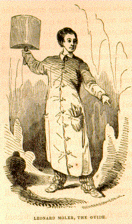 Although Mr. Moler has some time since surrendered the office of guide to his son, a likely and intelligent lad, thirteen or fourteen years of age, he on this occasion agreed to resume it, in special compliment to the party. His appearance, enveloped in a long, shroud-like gown - originally white, but now stained to a brick-dust red by frequent explorations of his subterranean domain - a slouched hat, and a great key in his hand, seemed likely to dash again the reviving courage of the ladies. But Crayon energetically interfered. "Hush! every one of you. You'll talk each other into hysterics in five minutes. Forward march!" A brisk walk of half a mile, partly along the picturesque banks of the Shenandoah, and partly ascending a steep zig zag path, brought them to a small wooden building set against a rock in the side of the hill.
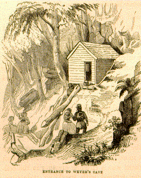The key grated in the lock, and the bolt sprung back with a hollow sound. With what sensations of mysterious awe, with what sinkings of heart, with what wild gushing fancies their young heads teemed as they crossed the threshold of that dark doorway, can never be known or written, for few words were spoken, and those only such as were necessary for the preparation. Bonnets were discarded, and their places supplied by handkerchiefs; long skirts were tucked up, and light shawls selected from the contents of the knapsack which had been packed and brought up for the purpose. Meanwhile the guide lit the candles, and gallantly handed to each the tin shade which held the light. Porte Crayon stood in a corner of the room, his scoffing tongue was silent, and perhaps there may have been a shade of sadness on his face but no one saw it. Twenty years before he had stood upon that same spot. How the retrospect of years will fill the soul with strange, unmeaning regrets, undefined, but deep. "Twenty years, twenty years! I was then a pale-faced, beardless boy, with a fancy fresh and untrammeled as theirs who stand now so serious, irresolute, and tremulous upon the threshold of this world of wonders, looking, indeed, as if they read upon the stone archway the fearful legend of the infernal portals:
"'Voi ch' entrate lasciate ogni speranza.'"
The guide moved on, and our friends followed in single file, Crayon bringing up the rear. Passing through the dark throat of the cavern, a somewhat straitened passage, and down an easy descent for a short distance, they reached a level flooring and more roomy passway. As they advanced it grew still wider, and anon groups of white shadowy figures seemed starting from the palpable darkness. Fanny stopped short, while Minnie and Dora grasped Porte's arms convulsively, trembling like aspens. "What are they?" The guide advanced, and turned his triple light upon the groups. "This is the Hall of Statuary." "How strange! How wild! How wonderful! It reminds me," said Crayon, "of the galleries of the Vatican by torch-Iight." On a nearer approach, the statues were seen to be but grotesque and shapeless stalagmites, more resembling petrified stumps than any thing else. Above them was a circular opening in the ceiling fifteen feet in diameter, fringed with sparkling stalactites.
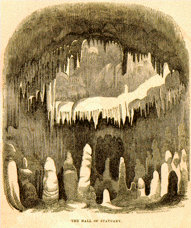
Through this opening was seen the interior of a feet in height, draped and columned gorgeously. On one side was the similitude of an altar, with curtains and candlesticks upon it, and, on the other, it required but a little liveliness of fancy to see a cathedral organ, with its rows of pipes and pendent cornices. The guide withdrew the lights with which the dome had been illuminated, and resumed his march forward through a narrow passage and down a rude flight of some eighteen or twenty steps into a room of considerable extent. "Now stand here; throw your lights forward, and look up. The Cataract!" A stream seemed to leap from a great height, pouring its white waters in sheets of foam over a broken ledge of rock, and tumbling down to the feet of the amazed spectators. They held their breath as if listening to murmur broke the death-like silence.
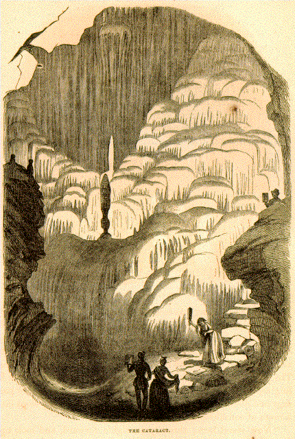
"The cataract, that like a giant wroth
Rushed down impetuously, as seized at once
By sudden frost, with all his hoary locks
Stood still."
As they gazed, feelings of awe came creeping over them, taking the place of admiration. The whole scene was so unearthly. "Now you have but to face about upon the ground where you stand to illuminate a scene of an entirely different character, and suggestive of a different class of fancies." Less imposing, less sublime, but excelling in beauty and splendor, a massive column of sparkling white, rich with complicated grooves and flutings, appeared rising from floor to roof. Around and half in shade were other columns of less striking form and color, supporting the ribbed and fretted ceiling. This glittered far and near with snow-white and sparkling stalactites, now richly fringing the stone roof-ribs, now hanging in dense masses, covering the spaces between. The richest arabesques of a Persian palace, or the regal halls of the far-famed Alhambra, are but poor and mean in comparison. Doubt and terror were all forgotten. The girls were wild with wonder and delight. "`Tis the work of fairies!" exclaimed Fanny. "Or the enchanted palace of some magician," said Minnie. "Oh dear!" said Dora, "they look like beds of silver radishes, all growing through the earth with their roots hanging down." "And there," said Fanny, "is a round waiter of frosted silver, half filled with beautiful shells." "And here," said the guide, "is something we must not overlook. What does that look like?" he inquired, directing their attention to an angular nook. "As I live," exclaimed Fannie, promptly, "there is a great shoulder of mutton hanging on the wall!" "I perceive," said the guide, pleasantly, "that the young lady knows something of housekeeping. This fine room is called Solomon's Temple, and this corner, for the sake of consistency, is Solomon's Meat House." "I should have thought," said Porte Crayon, "that the magnificent and all-accomplished Solomon would hardly have com- mitted such a crime against good taste as to hang his meat in such a temple as this."
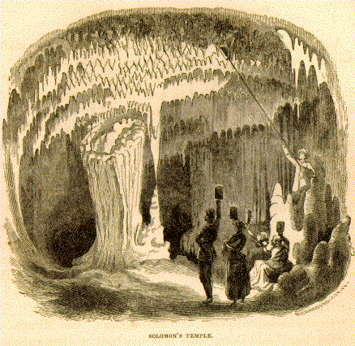
"And yet," replied the guide, "a greater than Solomon placed it there." "True, true. In the midst of sublimest passages, Nature will sometimes step aside to play the farceur." Ascending a stairway similar to that by which they entered, and on the opposite side of the Temple, our travelers pursued their marvelous journey, not in profound silence, as at first, for the sentiment that paralyzed their tongues had given place to pleasant confidence and eager curiosity. Again they call a halt, while the guide nimbly leaps from point to point, illuminating, as he goes, the wonders of the Cathedral. In the centre of this room hangs a mass of spar which bears a fancied resemblance to a chandelier, while beyond it rises the pulpit, an elevated circular desk covered with the most graceful folds of white drapery. On the opposite side is a baldachin, enriched with glittering pendent crystals, and the whole ceiling is hung with stalactites, dropping in long points and broad wavy sheets, some of a pure white, others of a clay red, bordered with bands of white, or with darker stripes of red and brown. These stone draperies are translucent and sonorous, emitting soft musical tones on being struck; and the heavier sheets which tapestry the sidewalls respond to the blows of the hand or foot with notes like deep-toned bells.
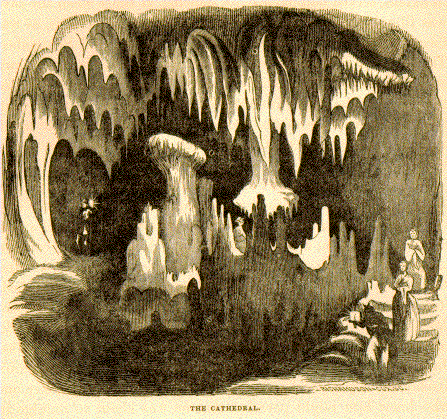
With interest and confidence increasing at every step, our adventurers went on; not caring who was before or who behind, they climbed up and down ladders, crept through narrow passages, and looked fearlessly down into the awful pits that yawned beside the way, passing through many apartments which, if found isolated, might have been accounted among the wonders of the world, but here, being secondary in interest and brilliancy, were hastily viewed and left behind. The largest of these is called the Ballroom, from the fact that its hard clay floor, a hundred feet by forty in extent, served indifferently for dancing, at times when the cave was illuminated and visited by large numbers of persons, as was formerly the custom in the months of August and September. These annual illuminations have been discontinued by the proprietor, because the smoke from so large a number of candles sullied the purity of the sparry incrustations, and visitors not unfrequently, taking advantage of the license which prevailed, would break and carry off whatever of the curious and beautiful they found within their reach. Another room of smaller size, called the Senate Chamber, is remarkable for a broad gallery projecting midway between the ceiling and the floor, and corniced with stalactites like the icicles that fringe the eaves on a winter's morning. At length they came to a passage so straitened that it required some management and some creeping on all fours to get through. This accomplished, they went down a steep, narrow stairway of fifteen or twenty feet descent. This stairway is called Jacob's Ladder. A square rock, covered with an incrustation resembling a table-cloth, is called Jacob's Tea-table, and an ugly-looking pit near at hand is Jacob's Ice-house. By a peculiar twinkle of Porte Crayon's eye, any one who knew him might perceive that he was about to indulge in some comments on this whimsical collection of property accredited to the Patriarch; but what he intended to say was lost forever to the world by a sudden signal from the guide. "Hist! be silent for a moment. I hear all . There must be some one in the cave besides ourselves. Listen!" "Yes! yes!" they all heard something, not like voices in conversation, but half stifled grunts and groans. Now it approaches nearer still, accompanied by a sputtering and scratching like the noise of a cat in a cupboard. "It is coming through the narrow passage. What can it be?" "Possibly some animal that has taken refuge in the cave, and is following the lights." "Oh mercy!" twittered Dora; "perhaps a bear!" At this awful suggestion the girls huddled together like a covey of partridges. "Stand off!" said Porte Crayon, fiercely, feeling for his knife. "Don't take hold of me." The knife had been left behind. What was to be done? All kept their eyes intently fixed on the mouth of the narrow passage. 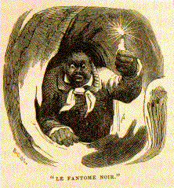 Presently a huge hand, holding a dim candle, protruded from the aperture. A hand without an owner has always been an object of terror since the times of Belshazzar. It was evidently not a bear; and the fears of the party, relieved on the score of a material enemy, began to turn toward the immaterial. They stood speechless and aghast, staring at that awful, superhuman hand. Soon, however, the phiz of Little Mice appeared to claim the property, but all ashen with terror and red with mud. "Parturiunt montes, nascitur ridiculous mus," said Crayon, curtly. "It will be a nasty ridiculous muss," said the guide, "if he should stick fast." It was for some moments doubtful whether the body could follow the arm and head; but Mice, having marked the lights, and recognized the laughter which greeted his appearance, gave a Titanic heave, as if he would lift the roof off the cave, and broke through, sacrificing his coat, and at the imminent risk of upsetting Jacob's Tea-table. "Master and Mistis, are you da? ugh - ugh ! Oh Lord! dis is a mizzible place!" The narrow ladder scarcely afforded room for Mice's enormous shoes, and in his haste to join his protectors he was near tumbling over the parapet. "A very narrer lather," said he, half soliloquizing. By this time the group below was shaking with laughter. "Oh, Mistis," said Mice, devoutly, "now I believes dere is a torment, sence I seen dis place. "What, in the name of torment, induced you to venture in here along, you inconceivable blockhead ?" "Why, Mass' Porte, you see, I hearn you was all gone in, an' I thinks any wha' de young missusses can go I can go too. Den when I come in a piece it git so dark and lonesome I begin to git feard-like. Den I seen sich things standin' about, and I hearn things like big bells. I think den I swine right straight down below. Ugh! it was misssable. I am glad I found you, sure enough." And, during the rest of the exploration, Mice stuck closer to his master than his sense of respect would have permitted any where on the earth's surface. 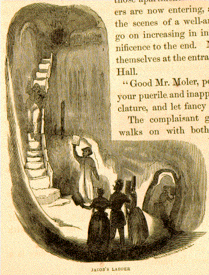If the first chambers through which they passed excelled in the rich profusion and brilliancy of their ornaments, they are thrown far in the background by the superior grandeur and sublimity of those apartments which our adventurers are now entering, and which, like the scenes of a well arranged drama, go on increasing in interest and magnificence to the end. Now they group themselves at the entrance of the Great Hall. "Good Mr. Moler, permit us to drop your puerile and inappropriate nomenclature, and let fancy run riot." The complaisant guide bows, and walks on with both hands full of lights. At every step strange and beautiful objects flash into being. Pillared walls, hung with long, sweeping folds of tapestry; banners flaunting from overhanging galleries; canopied niches filled with shadowy sculpture; the groined and vaulted ceiling dimly appearing at a majestic height, and long pendents dropping from out of the thick darkness that the feeble torches can not penetrate. Then the white, startling giant, which imposes so completely on the senses that it is difficult to conceive it was not sculptured by the hand of man, and pedestaled where it stands, precisely in the centre of the hall. Then the weird towers that rise beyond on either side, so draped and fluted, whose tops are lost in the upper room. This must be the Palace of the King of the Gnomes, and the gigantic figure there is his seneschal.
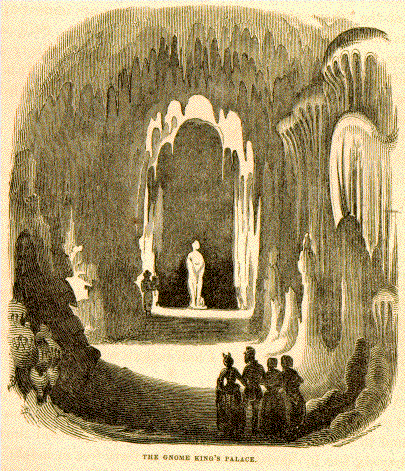
"Girls, you are not afraid of him? Let us advance our compliments to his swart majesty. Now this looks like hospitality. Here is a clear, dripping fountain, and, as I live, a glass tumbler to drink from." "I wonder," said Minnie, "if the seneschal put the glass here?" "It looks like Wheeling glass," said Fanny; "and it is more probable Mr. Moler put it here, I dare say by the seneschal's orders." "How strange!" said Dora. "On examination, it no longer resembles a statue, but a great shapeless stalagmite, and it looks more terrible even than at first." "True," quoth Minnie; "`Tis like some Bedlam statuary's dream, The crazed creation of misguided whim."' They pass on by the statue and the towers, but before leaving, the Hall turn to observe some candles which had been left burning at the other extremity. The distance appears immense, by actual measurement it is two hundred and sixty feet. Still other rooms, whose ceilings reach the imposing height of ninety or a hundred feet, and this last is the grandest of them all. It is the nave of some vast Gothic cathedral, which has been ingulfed by an earthquake, and lies buried half in ruin. "It recalls to me," said Minnie, "a Moorish legend: how that in the caverns of Granada ten thousand Moorish knights, armed cap-a-pie, were shut up by enchantment, and stand like statues of stone awaiting the hour of their deliverance. Look at them, Porte; do they not resemble Moorish knights, all in linked mail, with their long cloaks and pointed helmets?" "Bravo, Minnie! well fancied; and there in the distance is the throne, where sits the unhappy Boabdil, stern and solemn, awaiting but the touch of this talisman to step down among us. Here, Minnie, take this seal ring, and go touch his hand !" "Oh, Porte! put it up. I would not touch one of them for the world. I've fancied until I half believe what we've been talking about."
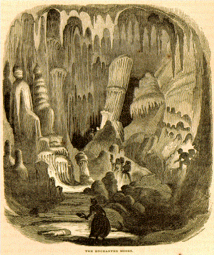
At the extremity of this long aisle, where the ceiling is ninety feet in height, stands the largest detached mass of concretion to be found in the cave. It is shaped like a tower, an oval thirty by thirty-six feet in diameter, and thirty or forty feet in height. Its surface is covered with irregular horizontal ridges and with perpendicular plaits or flutings a style of enrichment which might be introduced advantageously in some kinds of architecture. On one side a sheet of drapery falls from the top of the tower nearly to its base, in folds that a sculptor might imitate but could never excel. After wandering for half a mile through these subterranean halls, where Nature has poured out, "with such a full and unwithdrawing hand," her mingled stores of the beautiful, the fantastic, the awful, the sublime, you seem here to have reached the culminating point of grandeur. Then turn an angle of the rock and advance a few paces, when your lights flash upon the gaping oyster-shell. 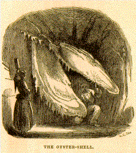 "From the sublime to the ridiculous there is but one step, said Porte Crayon. "What an absurd freak!" Mice examined the premises with such minuteness that one might have supposed he was looking for the oyster. "High!" said he; "it must a took a monstus man to a-swallered it. But I believes in any thing now, sence I seen dis place." Here they were informed they had reached the end of the cave; and, having refreshed themselves with water dipped from an alabaster fountain, covered by a transparent pellicle of spar, they resumed their lights, and commenced retracing their steps toward the realms of day. On their return they deviated from the course by which they had entered, and visited several side rooms, each exhibiting some new phase of beauty, grandeur, or surprise. The Bridal Chamber, on your first entrance, appears but a gloomy vault of naked limestone, until the light, like a magic talisman, reveals one of the most curious and beautiful objects in the cave. It resembles a sheet of white drapery thrown over a gigantic round buckler, and falling in classic folds nearly to the ground. Some ingenious person has fancied that it looked like a bride's veil hanging over a monstrous Spanish comb, and hence the name of the room.
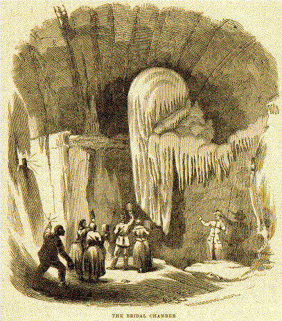
Porte Crayon and his companions were dissatisfied with the name, and desired the proprietor to change it. "With pleasure," said he. "Suggest an appropriate one, and the room shall be rebaptized upon the spot." Having puzzled their brains for some time to no purpose, the critics acknowledged themselves in a predicament. They gave it up. It was determined, however, that Crayon should take a drawing of it, and give the world an opportunity of taking the matter under advisement. Near this is the Music Room, the interior of which is nearly filled with broad sheets of incrustation falling from the ceiling to the floor, between which one might walk as through the mazes of a labyrinth. These sheets, like others which they had seen, were translucent and highly sonorous. When lights were placed behind them they glowed like candent metal, and at every blow gave out deep, rolling notes, which filled the cave like the peal of a church organ. On singing with this accompaniment, the effect was singularly pleasing, the voice being broken into tremulous quavers by the overpowering vibrations. On their return by the way of the Great Hall, it was proposed to put out the lights, that they might enjoy the poetry of darkness and silence for a while. The guide stationed himself at a distance, the girls formed a group around Crayon, and Mice seated himself near enough to touch Porte's boot with his hand, which he assured himself of by actual experiment before the lights were doused. "Now, girls, endeavor to hold your tongues, and be inspired with solemn awe." A nod of acquiescence was the answer. "Out with the lights! " And in a moment all was dark. Porte felt his arms simultaneously pinched by three little hands, and at the same time a huge grasp took him by the boot-leg. The silence was only broken by the suppressed breathing of the company, distinctly audible, and the not unmusical tinkling of water dropping far and near, ringing in the darkness like fairy bells. The attempt at silence soon became oppressive to the ladies, and Minnie, in a stage-whisper, began to express her disappointment in regard to the darkness. "Dat's a fac'," said Mice. "I `spected to a seed it good deal darker. " "I can see more now," said Dora, "than I could when the candles were lighted." True enough; pillared aisle, swath roof-rib, and candent column floated before their vision, distinct, but changing as a dream. "It is owing to some excited condition of the optic nerves,' said Porte, "which I will explain more thoroughly when we get out. Meanwhile, as the performance does not seem to give satisfaction, and we can neither hear silence nor see darkness, as we expected, let us light up and proceed." As they revisited the different points of interest on their return, there was a general disposition shown to linger and look again, as if the curious appetite was unsatiated still, and the faculty of wonder still untired. They slowly traveled on, however, and at length observed a soft, greenish tint upon the floor and walls of the cave, which had the appearance of paint or delicate moss. This coloring gradually grew greener and brighter until they found themselves re-entering the wooden vestibule, through the openings of which the bright, blasting light of midday streamed. So strong was the contrast that it required some minutes of preparation before it was agreeable to venture out. On referring to the watches, it was ascertained that their visit had lasted nearly four hours, and yet no one had felt the slightest symptom of fatigue, physical or mental. But the sight of the familiar things of earth soon reminded them that it was dinner-time, and they cheerily retrod the path to the hotel. After dinner Porte Crayon took his sketch-book and pencils, and, with the proprietor's son for his guide, returned to the cave; and it is to his persevering labors during that and the three succeeding days that we are indebted for the accurate illustrations which give point and interest to what would otherwise be but a loose and unfinished description of "Nature's great master-piece." Indeed, but for the sketches, the disheartening task of description would probably not have been undertaken, for how can mere words portray scenes which have no parallel among the things of upper earth? How can the same conventional forms of speech which have been used a thousand thousand times to describe mountains, rivers, waterfalls, buildings, thunder-clouds, sunset, and so on, to the end of the catalogue, be combined with sufficient skill and refinement to delineate suhjects and sentiments so new and incomparable? Language fails frequently in conveying correct impressions of the most commonplace objects, and in the hands of its most skillful masters is sometimes weak, uncertain, false. Combine it with the graphic art, and how the page brightens! Well have our fathers called it the art of Illumination. Most books without illustrations are but half written; and with the increased and increasing facilities of art, the reading public will soon begin to demand it as their due, and pass by with disdain the incomplete narrative which is given only in words. This must and will become, par excellence, the age of Illustrated Literature. The details of Porte Crayon's experiences in subterranean sketching are not without interest. On going into the cave, generally after an early breakfast, he took some one with him to assist in carrying in candles, and in illuminating the different apartments. This accomplished, he sent his companion out, and had the cavern to himself, with his thoughts for company. "I had visited the place," said he, "when a mere boy, and supposed the keenness of my appreciation of its wonders would have been blunted by that circumstance, as well as by the years of travel and adventure that have followed. I was gratified to find I was mistaken. It seemed, rather, that time and cultivation had mellowed the sensibilities and increased the power of vision. Nor did familiarity with its details diminish my astonishment; on the contrary, at each visit wander seemed to grow upon me. So different from what we are accustomed to see, so infinite in its variety, every flash of light developing some new field wherein the imagination might revel, every change of position suggesting some new theme for the fancy to seize upon. Had there been a concealed spectator near when I was endeavoring to choose a point from which to make a sketch, he must have been highly amused at my ludicrous indecision. I arranged my candles and rearranged them. I ran up and down. I could not choose, and was forced frequently to laugh aloud at my own absurdity. I lay flat on the soft clay floor, with my sketch-book before me. I perched myself on the round head of some giant stalagmite. I climbed up the walls, and squeezed myself into damp niches. More miserable than the ass, I had a hundred bundles of hay to choose from, and the regret at what I missed seemed to overbalance the satisfaction I felt in the sketches actually made. Not unfrequently I forgot my drawing entirely, and would sit looking with all the intensity of eyes and soul, as if endeavoring to comprehend more fully the wonderful creations by which I was surrounded. Canst thou read, O philosopher, what is written on these eternal tablets ? The percolation of water through limestone strata for ten thousand years and nothing more ? "The last sketch I made," continued Crayon, "is a most singular one. In arranging the lights to show the the Magic Tower to the greatest advantage, I observed two gigantic figures standing in deep shade, but strongly relieved against the illuminated wall. They stood so statue-like, and so complete was the illusion, that I felt some hesitation in representing them, fearing that I might be suspected of condescending to an artistic trick. Although wonderful stories are often prefaced in the same manner, it rarely happens that any opportunity of telling them is neglected, notwithstanding the risk incurred in the reputation of the teller. So here go the statues, at all hazards. While I was at work upon them, two boys entered with a pot of hot coffee, which had been sent to me by arrangement. Both started with surprise, and remarked on the giants, as they called them. By my pocket thermometer I ascertained the temperature of the cave to be about 53 1/2 degrees Fahrenheit, and, although I sometimes remained in it from eight to ten hours at a time, I never felt the slightest discomfort from the darkness or any other cause. One morning, having risen before daylight, I went to work at a point not more than a hundred or a hundred and fifty feet from the entrance. Here I suffered greatly from the cold, as the external air was at that time in the morning very frosty, and I was near enough to feel its influence."
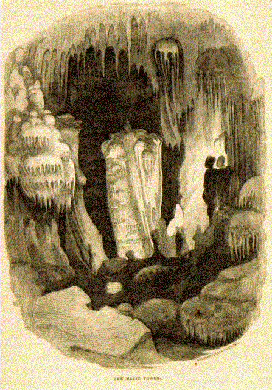
The length of the cave in a straight line is about sixteen hundred feet, but the aggregate of all its branches and windings is near three thousand. It is said to have been discovered in 1804 by one Bernard Weyer, a hunter, while in search of some lost traps. Crayon, however, tells us he was credibly informed that Weyer was not the actual discoverer, but some one else whose name he unfortunately forgets. It makes no difference. Not all the historians nor indignant poets who have written, or will write, can ever restore to Columbus the lost honor of naming the New World; and Weyer's Cave will be called Weyer's Cave till the end of time, in spite of any right or knowledge to the contrary. During the period of Mr. Crayon's entombment the ladies began to grow restless and seemed likely to fall a prey to ennui. As often as he returned to the hotel, he promised a speedy termination of his labors; and as often as he re-entered the cave, he forgot them and all the rest of the superficial world. One evening he was surprised and gratified to find them in a state of high good-humor; and, in answer to his apologies for detaining them so much longer than he had promised, he has assured that they would cheerfully remain a day or two longer if he wished it; they could amuse themselves very well, and were in no hurry to get to Staunton. "And now, Cousin Porte," lisped Minnie, "we want your judgment on a question of taste." Porte Crayon, charmed by their complaisance, and flattered by the appeal, signified his readiness to sit in judgment. "While you were in the cave," continued Minnie, "we were perishing with ennui and for something to do. We ordered the carriage and drove to Port Republic, where we made some purchases, and we want you to decide which is prettiest;" and thereupon each of the young ladies drew from her work-basket a wax doll, and held it up for Porte's inspection, producing, at the same time, sundry bits of gay-colored calico and cotton lace. "Mine," said Minnie, with great animation, "is to be dressed in red, and Dora's in green, and Fanny's is to have a black velvet polka!" "And so," said Porte Crayon, recovering his utterance," you've deliberately gone back to playing with dollbabies!" "Why Porte! How absurd! These are not for ourselves; they are intended as presents for the children at home. You certainly do not suppose that we could be amused with dolls ?" "Certainly not," replied Porte. "I beg your pardon. I was frightened. Indeed, I am glad it is explained. But you were so earnest and so gleeful." "Well, and have you not often told us that the secret of happiness was in always having something to do, and in doing that something with zeal and cheerfulness?" Mr. Crayon was mollified at hearing himself quoted. " Every thing that I say is not thrown away," thought he; "some of it sticks." "And now, Porte, that's a good cousin, sit down, and tell us something more about the cave while we carry on our sewing." Crayon drew up his chair complacently. "This, young ladies, is a favorable occasion to explain to you my theory in regard to the optical delusions in the cave when the lights were put out. The optic nerves -" "I say, Fanny, hand me the scissors." "Are you listening ?" said Crayon. "Certainly; you said nerves." "The reason why, upon the first extinguishment of the lights, the intensity of the darkness is not appreciated, is -" "Now, Minnie, would you advise me to trim this skirt with white or black?" "Are you listening to me?" inquired Crayon, with some heat of manner. "To be sure we are, and very much interested; you said is." "The reason, then, of this phenomenon is, that the optic nerves -" "Oh! Dora, don't for the world cut that bias; you'll waste the green calico!" "Now, seriously, young ladies," said Crayon, reddening, "I am endeavoring to give you some scientific information which may be highly useful, and will be at least ornamental, if perchance in society this subject should be introduced -" "How elegant! oh! oh!" exclaimed Minnie; "it will be charming. It will be too sweet in this red dress. Diddle diddle, diddle diddle, diddle diddle," sung she, dancing the doll over the work-table in an ecstasy of delight. "May the deuce take them all!" said Porte Crayon, rising indignantly, and stalking out of the room. " Such is the fate of all who, in the simplicity of their hearts, volunteer to benefit or instruct the world!" Presently he burst into a good-humored laugh. "After all, didn't Chief-justice Marshall play marbles after presiding in the Supreme Court - ay, and enjoy the game, too, as much as any of the boys?" Crayon put his head in at the open door. "Girls, I ask pardon for my impatient exclamation just now. Amuse yourselves while I seek a subject for another sketch."
Continue with illustrated Chapter IV